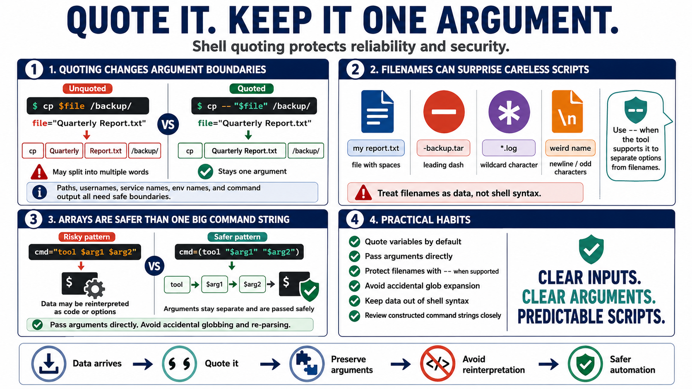

Quoting, Expansion, and Argument Safety
Connecting to LMS... Progress: in progress

Narration
Quoting is not cosmetic. It controls how values become arguments. In shell scripts, an unquoted variable may be split into multiple words or expanded as a filename pattern. A quoted value normally stays one argument. That difference matters when a value is a path, username, service name, environment name, or output from another command. Argument boundaries are both reliability boundaries and security boundaries.
Filenames can contain spaces, dashes, newlines, and other characters that surprise careless scripts. A leading dash may be interpreted as an option by some commands unless the tool supports and receives a separator such as double dash. A wildcard character may expand into matching files if it is not protected. Defensive scripts treat filenames as data rather than as shell syntax.
When Bash arrays are available, they can be a safer way to hold argument lists because each element remains a separate argument. This is usually better than building one long command string and asking another shell to interpret it. Constructed command strings deserve close review because they make it easier to accidentally reinterpret data as code or options.
The practical habit is simple: quote variables unless there is a deliberate reason not to, pass arguments directly, avoid accidental globbing, and keep data out of shell syntax. These habits do not make scripts complicated. They make scripts behave more like the author intended when values contain spaces, unusual characters, or unexpected content.